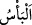

kaçının. Çünkü yine o, ağaçlarda etkili olduğu gibi sizin bedenlerinizde de etkisini
gösterir.”[181]
Mesnevî’de der ki:
Cenâb-ı Hak nezdinde sonbahar, nefis ve hevadır.
Akılla cansa baharın ve ebedîliğin ta kendisidir.
Eğer senin gizli ve cüzi bir aklın varsa
Cihanda bir kâmil akıl sâhibini ara!
Senin cüz’î aklın, onun külli aklı yüzünden külli olur.
Çünkü akl-ı kül, nefse zincir gibidir.
Binaenaleyh hadîsin mânası teville şöyle olur: Pak nefesler
Bahar gibidir, yaprakların ve filizlerin hayatıdır.
Velîlerin sözlerinden, yumuşak olsun, sert olsun,
Vücudunu örtme çünkü o sözler, dîninin zâhiridir.
Sıcak da söylese, soğuk da söylese, hoş gör
Ki sıcaktan, soğuktan ve cehennem azabından kurtulasın.
Onun sıcağı, hayatın ilkbaharıdır.
Doğruluğun, yakînin ve kulluğun sermâyesidir.
Çünkü can bahçeleri, onun sözleri ile diridir.
Gönül denizi, bu cevherlerle doludur.
“Ve savaşta” darbe ve yaralama şeklinde bâzınızdan bâzınıza gelecek elemden “sizi
koruyacak zırhlar yarattı.” et-Tibyân’da belirtildiği gibi “__WORD__, savaşta şiddet,
öldürme ve yaralama demektir. İlk defa zırh yapan Davud (a.s.)’dır. Allah Teâlâ ona
demiri mum gibi yumuşatmıştır. Nitekim Allah: “Ona demiri yumuşattık.” (Sebe,
34/10) buyuruyor. Lokman (a.s.), Davud (a.s.)’la aylarca arkadaşlık yaptı. Davud (a.s.)
zırh örerdi. Lokman (a.s.) ona hiçbir şey sormadı. İşi bitip giyince Lokman (a.s.): “Evet
sen harb elbisesi giydin” dedi.
Lokman (a.s.) Davud (a.s.)’ın elindekini görünce
Öyle ki mucize ile demiri mum eyler
Lokman (a.s.) ne yapıyorsun diye sormadı, bildi
Ki Lokman (a.s.) Dâvud (a.s.)’dan sormadan mâlum eyledi
Ey Kureyş topluluğu! “İşte böylece” daha önce geçen bu nîmetleri tamamladığı gibi
“Allah, müslüman olmanız için üzerinize nîmetini tamamlıyor.” Burada “müslüman
olma”, teslim olma ve boyun eğme demektir. “Bu nîmetlere bakıp düşünür tefekkür
edersiniz.” anlamına gelen sebebinin yerine konulmuştur. Allah size bol bol verdiği
gizli, açık, enfüsî ve âfâkî (iç ve dış âleminizdeki) nîmetleri düşünmenizi istemektedir.
Böylece o nîmetleri verenin hakkını tanırsınız, sâdece O’na îman edersiniz ve O’na